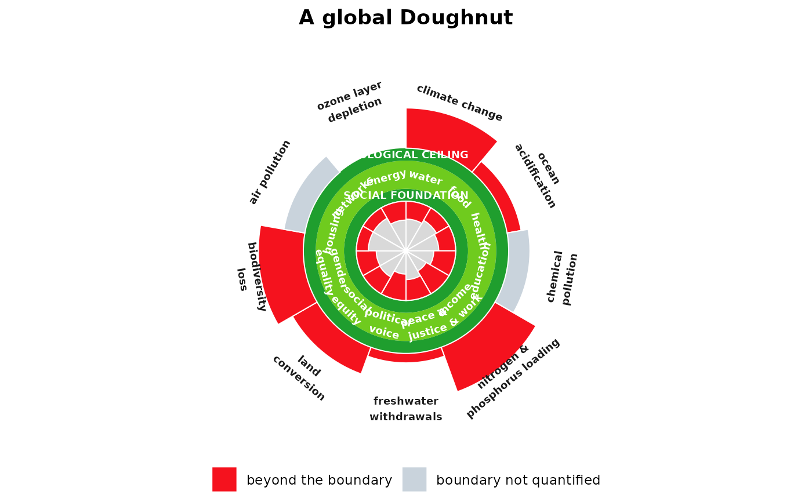

Draws the Doughnut in its canonical form: an inner ring of social foundation dimensions whose shortfalls bite inward toward the hole, an outer ring of ecological ceiling dimensions whose overshoots break outward past the boundary, and the green safe and just space between them. The two rings carry independent dimension sets, so a 12-dimension social foundation and a 9-dimension ecological ceiling divide the circle differently, exactly as in Raworth's figure.
Usage
doughnut(
social,
ecological,
dimension = "dimension",
shortfall = "shortfall",
overshoot = "overshoot",
title = NULL,
safe_fill = "#6FCB1E",
ring_fill = "#1F9E2E",
hole_fill = "#D9D9D9",
breach_fill = "#F5121E",
unquantified_fill = "#C9D3DC",
label_size = 2.4,
ring_label_size = 2.4
)Arguments
data.frame of social foundation dimensions, one row each, with a label column and a shortfall column scaled 0 (fully met) to 1 (total shortfall).
NAmarks a dimension whose boundary is not quantified.- ecological
data.frame of ecological ceiling dimensions, one row each, with a label column and an overshoot column, 0 meaning within the boundary and larger values further beyond it.
NAmarks a boundary not quantified.- dimension
name of the label column, used in both data frames.
- shortfall
name of the shortfall column in
social.- overshoot
name of the overshoot column in
ecological.- title
optional plot title.
- safe_fill, ring_fill
fill for the safe and just space and for the two boundary bands.
- hole_fill
fill for the centre of the Doughnut.
- breach_fill
fill for shortfall and overshoot wedges.
- unquantified_fill
fill for dimensions whose boundary is not quantified.
- label_size, ring_label_size
text sizes for dimension labels and for the two band labels.
Details
This is the polar snapshot half of the grammar, the boundary at a single
instant. See geom_boundary() for the Cartesian trajectory that restores the
time derivative the Doughnut necessarily lacks.
Examples
social <- data.frame(
dimension = c("water", "food", "health", "education", "income & work",
"peace & justice", "political voice", "social equity",
"gender equality", "housing", "networks", "energy"),
shortfall = c(0.36, 0.29, 0.34, 0.44, 0.53, 0.42,
0.53, 0.39, 0.40, 0.24, 0.24, 0.38))
ecological <- data.frame(
dimension = c("climate change", "ocean acidification", "chemical pollution",
"nitrogen & phosphorus loading", "freshwater withdrawals",
"land conversion", "biodiversity loss", "air pollution",
"ozone layer depletion"),
overshoot = c(0.85, 0.30, NA, 1.00, 0.20, 0.60, 0.95, NA, 0))
doughnut(social, ecological, title = "A global Doughnut")
